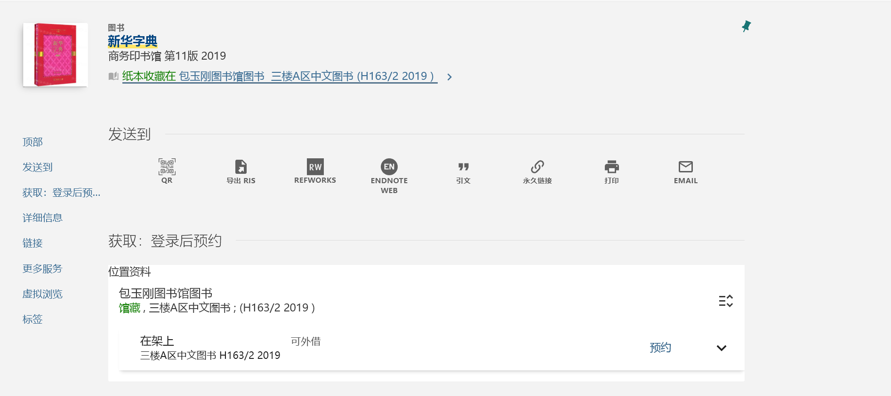

图书馆
地理位置
主馆（2008）
- 面积：约4.3万平方米
- 座位：近4000席
楼层导览
- L1：交图创咖
- L2：
- L3：
- L4：
开放时间
座位分布 & 预约情况
包玉刚图书馆（1992）
- 面积：约1.4万平方米
- 座位：约1200席
- 总藏书量约为93万册
楼层导览
- L1：
- L2：
- L3：
- L4：
开放时间
李政道图书馆（2014）
- 面积：5100平方米
- 座位：270个
楼层导览
- -1F：报告厅，有342个座位，可以举办各类学术会议及小型音乐会。
- 1F：“以天之语，解物之道”展厅
- 2F：展厅、阅览座位
- 3F：阅览座位、书架区、画架区、诺贝尔角、科普区、李政道藏书房和赤子情等多个区域
- 4F：
图书借阅
请首先查看借阅规则。
- 教职工计划内学生可外借图书数量不限，单次借期30天，快到期时可续借。
- 逾期费用
- 普通图书逾期费用：0.10元/天/册（寒、暑假除外）。
- 预约催还逾期费用：如续借期内图书被其他读者预约时，读者应按通知规定时间还书，过期未还书按预约催还逾期处理，逾期费为1.00元/天/册（寒、暑假除外）。
- 短期外借图书（期限为7天）逾期费：1.00元/天/册（寒暑假除外）。
可在此处查看已借阅图书。
预约借阅
- 通过上海交通大学图书馆网站搜索目标借阅书籍，查看馆藏状态。
- 在网站上提交预约申请。馆员会帮你取书，只需等待邮件通知，就可在你选定的取书图书馆的预约区借阅你想要的图书。(就算在闵行，也可以预约借阅徐汇的书，反过来也行)
自助借阅
如果你十分急迫，且恰巧目标借阅书在您方便前往的图书馆，也可以尝试自助借阅。
通过上海交通大学图书馆查询借阅书籍所在的地点及索书号，确认借阅书籍没有被预约且在馆。

这里以新华字典为例，可以看到，该书在包玉刚图书馆三楼A区。
那么H163/2 2019是什么，在这里不妨了解一下索书号的构成。
- 索书号
分为分类号、种次码或著者码、辅助区分号。例如这里H163就是分类号，2是种次码或著者码，2019是辅助分区号。
索书号的排列采用逐行排列的方式，即先按照分类号排列，再按照种次码或著者码排列，最后按照辅助区分号排列，其中：
- 分类号采用小数制排列，自左至右逐一排列组成分类号的字母或数字，如K1排在K209前面，K102排在K3前面。
- 其他号码采用整数制排列，即按照作为一个整数的大小进行排列，如K209/31排在K209/56前面，K209/5排在K209/16前面。
前往包玉刚图书馆三楼A区，找到包括H163的书架。需要注意H16后面是H161并非H17。跳跃观察书架上书的索书号，寻找H163/2附近的索书号，在此附近仔细寻找，直至找到该书。
存在一定可能找不到该书，有可能是书被图书馆里的人拿走了，亦或是刚归还，馆员还未将图书上架。此时选择预约借阅可能是最好的解决方案。
找到书籍后，前往自助借还机或人工柜台，借阅图书。
归还
大部分图书均可异馆归还，只需前往离你最近的上海交通大学图书馆归还即可。